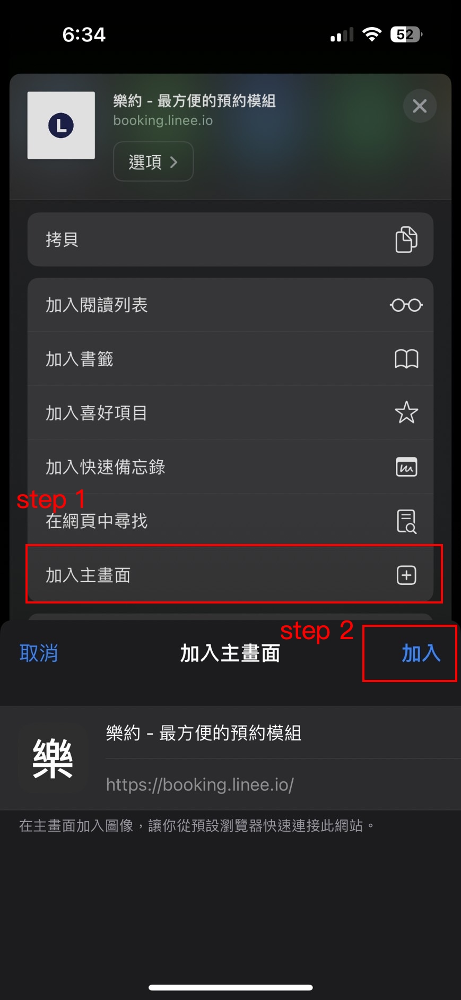
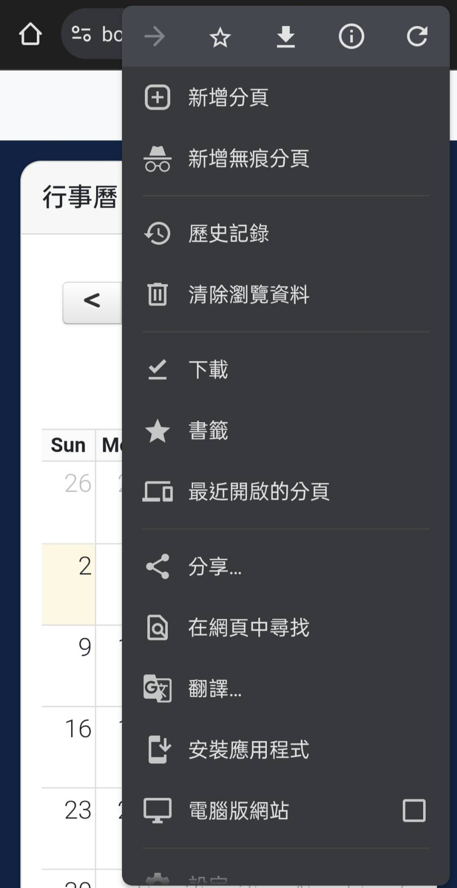
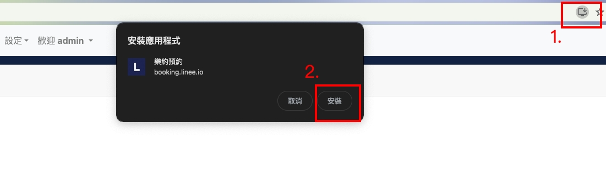

什麼是 PWA
如果有寫過跟上架過 APP 都知道 APP 再上架的時候很麻煩，而且需要上架費，這邊就來介紹漸進式網路應用程式PWA ( Progressive Web App) ， 他主要可以讓網站擁有以下功能
- Progressive 透過漸進式讓每位使用者都可以使用
- Responsive 用戶介面的自適應
- Connectivity independent 可以在沒網路或網路訊號不好的地方使用
- App-lik 可以跟瀏覽網路一樣的快速
- Fresh 自東更新內容
- Installable 可以新增到桌布，變成一個 APP ，不需另外下載
資料來源
製作 manifest.json
在網站上根目錄加上兩個檔案 manifest.json 跟 service-worker.js ，然後在內容引用這兩個檔案就可以做到了，以下就來說明 manifest.json 的內容設定
1
2
3
4
5
6
7
8
9
10
11
12
13
14
15
16
17
18
19
20
21
22
23
| {
"background_color": "#fff",
"display": "standalone",
"orientation":"portrait",
"theme_color": "#fff",
"short_name": "短名稱",
"name": "名稱",
"description": "說明",
"lang": "zh-TW",
"icons": [
{
"src": "images/logo180.png",
"sizes": "180x180",
"type": "image/png"
},
{
"src": "images/logo48.png",
"sizes": "48x48",
"type": "image/png"
}
],
"start_url": "./index.php"
}
|
- background_color 背景顏色 (設定 APP 的背景顏色 )
- display 顯示方式 有fullscreen、standalone、minimal-ui、browser 四個選項可以選擇，通常都是選擇 standalone
- orientation 螢幕顯示方向，預設是直向
- theme_color 每個頁面的顏色
- short_name 應用程式的簡短名稱
- name 應用程式的名稱
- description 應用程式的簡短簡介
- lang 應用程式的語言
- icons 應用程式的符號
- start_url 開始的網址
製作 service-worker.js
接著來看 service-worker.js 檔案
1
2
3
4
5
6
7
8
9
10
11
12
13
14
15
16
17
18
19
20
21
22
23
24
25
26
27
28
29
30
31
32
33
34
35
36
37
38
|
self.addEventListener('install', function(event) {
console.log('[Service Worker] Installing Service Worker ...', event);
});
self.addEventListener('activate', function(event) {
console.log('[Service Worker] Activating Service Worker ...', event);
return self.clients.claim();
});
self.addEventListener('fetch', function(event) {
console.log('[Service Worker] Fetch something ...', event);
event.respondWith(fetch(event.request));
});
let deferredPrompt;
self.addEventListener('beforeinstallprompt', function(event) {
console.log('beforeinstallprompt fired');
event.preventDefault();
deferredPrompt = event;
return false;
});
if(deferredPrompt) {
deferredPrompt.prompt();
deferredPrompt.userChoice.then(function(choiceResult) {
console.log(choiceResult.outcome);
if(choiceResult.outcome === 'dismissed'){
console.log('User cancelled installation');
}else{
console.log('User added to home screen');
}
});
deferredPrompt = null;
}
|
開始使用
在 head 內引用 manifest.json
1
| <link rel="manifest" href="./manifest.json">
|
在程式的最後新增
1
2
3
4
5
6
7
8
9
| <script>
if ('serviceWorker' in navigator){
window.addEventListener('load', function() {
navigator.serviceWorker.register('./service-worker.js')
.then(function() { console.log("Service Worker Registered, Cheers to PWA Fire!"); });
}
);
}
</script>
|
這樣漸進式網路應用程式就完成了
安裝 PWA
IOS
使用中間分享圖示，選擇加入主畫面，按下新增，就會出現在手機主畫面

Android
在工具列直接點擊安裝應用程式就可以了

WIN / MAC
瀏覽器網址列會出現可以下載的符號，按下後即可安裝

結語
PWA 現在算是蠻熱門的一種 App 製作方式，功能非常的強大但事實作起來並不難，所以推薦給大家嘗試看看